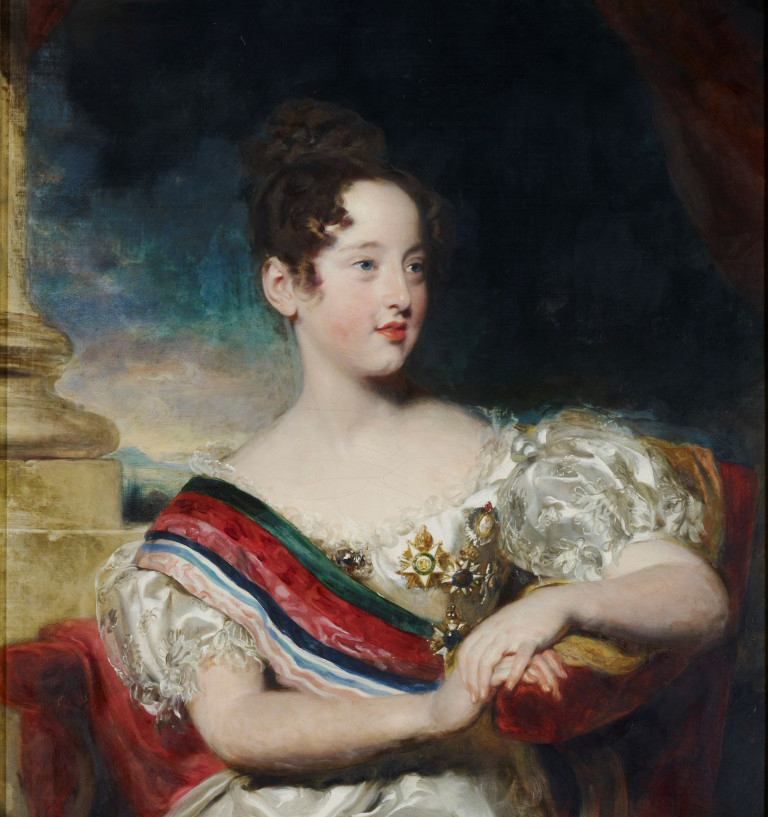

Filha de um imperador, irmã de outro, mãe de dois reis, a primeira rainha constitucional de Portugal teve uma vida atribulada e curta – morreu aos 34 anos, ao dar à luz o 11.º filho.
D. Maria da Glória (1819-1853), princesa do Grão-Pará, vivia uma infância despreocupada na corte tropical do Rio de Janeiro quando se viu transformada em rainha D. Maria II de Portugal, em Maio de 1826. Tinha oito anos. O pai, D. Pedro I do Brasil, tornara-se dias antes D. Pedro IV de Portugal, quando chegou à baía de Guanabara o barco com a notícia da morte do avô de Maria, D. João VI.
Conhecedor dos “anticorpos” que contra ele existiam em Portugal por ter sido o principal responsável pela independência do império brasileiro, D. Pedro outorgou a Carta Constitucional e, logo em seguida, abdicou a favor da filha. Numa tentativa de reconciliar os portugueses divididos, desde a revolução de 1820, entre liberais e absolutistas, propôs ao seu irmão mais novo, D. Miguel, chefe da facção absolutista, o casamento com D. Maria II e o título de lugar-tenente do Reino. D. Miguel, exilado em Viena de Áustria desde o falhanço do golpe da Abrilada, em 1824, aceitou tudo. Casou por procuração com a sobrinha e jurou aceitar a Carta. Mal regressou a Portugal, desistiu do casamento, quebrou a jura e fez-se aclamar rei absoluto.
D. Maria II, repudiada e sem coroa, atravessou o Atlântico acompanhada pela madrasta, D. Amélia, em busca de apoios para a sua causa nas cortes europeias. Em 1831 juntou-se-lhes D. Pedro, que se vira obrigado a abdicar também da coroa imperial brasileira. Em França e na Inglaterra, D. Pedro recrutou mercenários que juntou aos portugueses exilados para formar o exército liberal. Em nome da filha conquistou os Açores, em 1832; desembarcou com 7500 homens na praia de Pampelido; ocupou o Porto; e, em 1834, ganhou a guerra civil, morrendo logo a seguir, de tuberculose.
Com 15 anos, D. Maria II sentou-se finalmente no trono. E como o primeiro dever de monarca constitucional é assegurar a sucessão, casou-se, em Janeiro de 1835, com o noivo escolhido pelo pai: Augusto de Leuchtenberg, irmão de D. Amélia, a boa madrasta. Ao fim de dois meses, o real consorte morreu de uma angina. A morte inesperada deu azo ao boato de que o marido da rainha fora envenenado por ordem do chefe do Governo, o duque de Palmela. Chegou a haver tumultos em Lisboa, apesar de o resultado da autópsia ter desmentido o rumor.
Um ano depois, a rainha voltou a casar, com o alemão Fernando de Saxe-Coburgo-Gotha, a quem deu o título de rei D. Fernando II quando nasceu o primeiro filho (futuro D. Pedro V), em 1837.
Ao mesmo tempo que ia dando à luz herdeiros, aos quais fazia questão de garantir uma educação esmerada (passou à história com o cognome de A Educadora), D. Maria gastava as energias que lhe sobravam nas tarefas políticas. Um dever esgotante: a Carta Constitucional reservava à rainha o poder moderador, a chave do sistema. Cabia-lhe gerir os conflitos entre as facções vencedoras da guerra civil, cada uma disposta a golpes e revoltas sangrentas para chegar ao governo. Os chefes políticos — Palmela, Terceira, Saldanha, Passos Manuel, Sá da Bandeira — digladiavam-se sob os rótulos de cartistas, vintistas, setembristas. A todos eles D. Maria II deu e tirou o poder.
Até que chegou Costa Cabral. Oriundo da extrema-esquerda vintista, nasceu plebeu e morreu marquês. Em 1842 foi chamado ao governo e rasgou a Constituição de 1838, mais radical, restaurando a Carta Constitucional. A revolta da Maria da Fonte e a guerra civil da Patuleia tiveram Cabral como alvo. Mas, ao contrário dos outros políticos, contou sempre com o apoio da rainha. Os adversários espalharam o boato de que a soberana e o ministro eram amantes. Cabral, que não reagira quando lhe chamaram corrupto, processou desta vez, nos tribunais ingleses, o jornal Morning Post, que publicara a “calúnia”. Na sua biografia de D. Maria II (2007), Maria de Fátima Bonifácio refere que a correspondência entre a rainha e Cabral revela “um grau de confiança e intimidade entre ambos que até hoje nenhum documento comprovara”.
Quando as sucessivas gravidezes começaram a ameaçar a vida da rainha — além de a terem transformado, a partir dos 25 anos, numa mulher obesa e deformada –, os médicos avisaram-na do perigo. “Se morrer, morro no meu posto”, respondeu D. Maria II. Morreu ao fim de 13 horas de trabalho de parto.